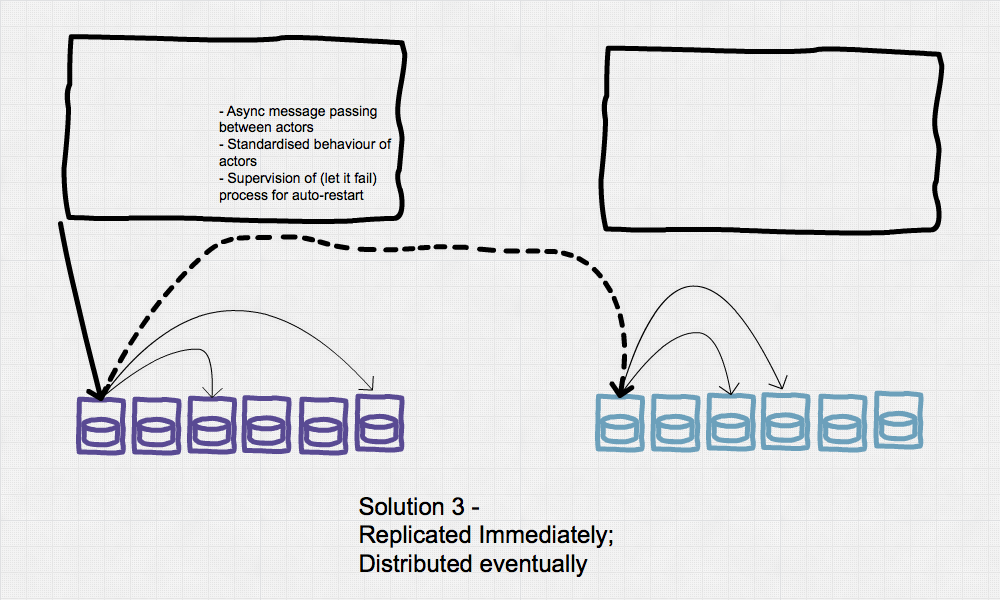
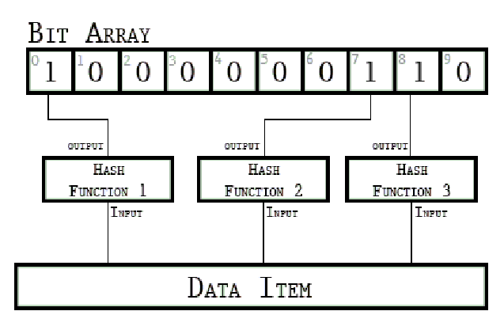
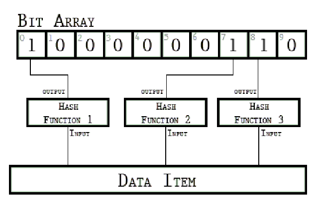

Eventually with Certainty

Eventually with Certainty
National Health Service - Englang
- Why do we need Riak?
- Why do we need anti-entropy in Riak?
- Why do we need better anti-entropy in Riak?
What is Riak
- Developed by Basho
- Bought to open source by Bet365
- Run by community (part funded by NHS)
The NHS SpineCore Problem
Fornt to many appliations:
- 2bn records/documents (10KB - 1MB))
- 300 different transactional messages supported
- 40M requests per day
We care about
- Availability, Durability, and Reduced Variation
2003 - First Answer
2008 - Thousands of Years of Effort to get ...
Time for Revolution

2014 - Riak KV
Riak KV - Benefits
98% reduction in hardware annuity charges
Operational cost and fear of failover transformed
Outcome - 99.999%, 24/7, one engineer on-call
Riak KV - Distribution and Eventual Consistency
Dotted Version Vectors
Hinted Handoff
Read Repair
Real-time replication push
Per-vnode key-listing full-sync
Active Anti Entropy
Merkle Trees
Dirty or Mismatched Segments - Need a segment-ordered store
vnode -> index_hashtree -> hashtree {preflist, n_val)}
Keys hash to segments, keys & clocks to segment values
Need to know keys/hashes by segement
- updates to trees are deferred (dirty segments)
- mismatched segments need to be converted back
Active Anti-Entropy
Keystore has a memory cost
Rebuilds have unpredictable impact
Hashes don't support smart decisions
Inter-cluster synchronisation requires alignment
Inter-cluster synchronisation works only sometimes
No flexibility - e.g. per bucket
Calculating a Hash Securely
H([{K0, DVV0}, {K1, DVV1} .... {Kn, DVVn}])
H({K0, DVV0}) XOR H({K1, DVV1}) XOR .... H({Kn, DVVn})
LSM trees need a hash of the key already
 

XOR benefits
Read before write - can make a delta change
Can fold across a stores incrementing a tree
Can merge trees across stores
Segment Hash Benefits
Can use an ordered store - Native
Can use ordering to make Parallel stores multi-purpose
KV Index Tictac Tree
New AAE Features - Riak
Improve throughput
More frequent checking - and double-checking
Validate not rebuild
Low cost full-sync
Intelligent repair
Ring resizing
Backups - e.g. compare n=3 with n=1
Compare with othe database types
Results

Results
< 0.1% delta compares to no AAE
> 4% improvement compared to legacy AAE
92.5% root_compare, 7.5% root_confirm
Better Idea?
Related Work
Leveled
Core node worker pool
Coverage fold
Rabl
Thank-You
http://martinsumner.github.io/presentations/codebeam_sto#/
https://github.com/martinsumner/kv_index_tictactree
https://github.com/martinsumner/leveled
https://github.com/basho/riak
@masleeds